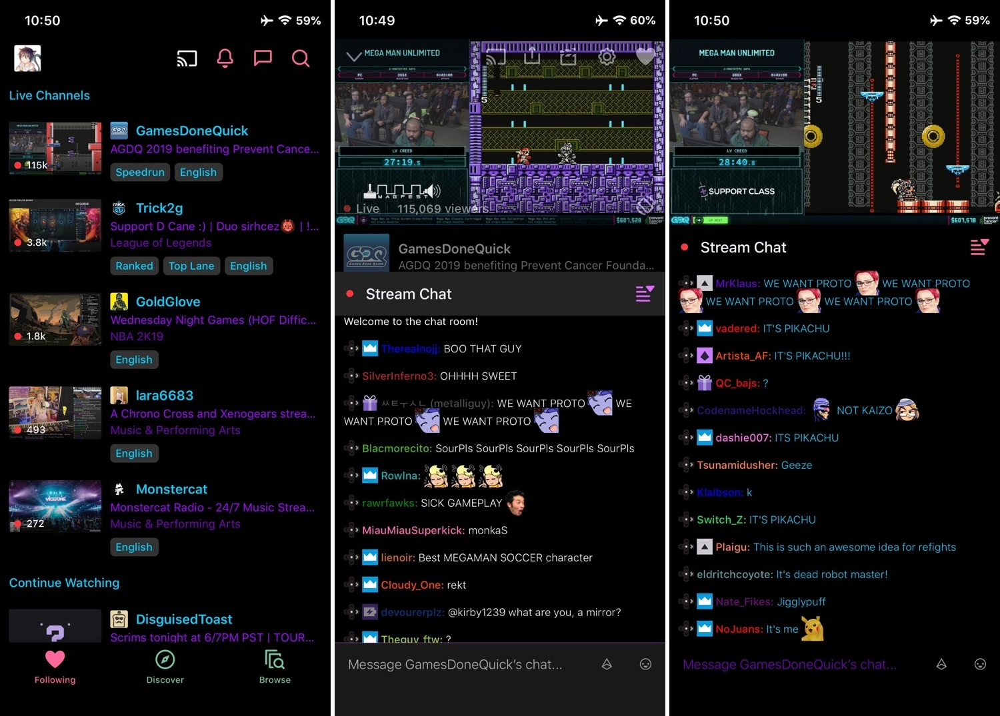

Twitch est une plateforme de vidéo en directe qui est devenu tellement connue qu'ils ont créer leur propre application mobile pour faciliter le visionage sur smartphone.
A la base les gens retransmettaient leurs parties de jeuxvidéos de manière "casual" sans profit juste pour la passion puis c'est devenu une machine tellement connue que c'est devenu du business.
Je regarde des chaînes de Twitch la plupart du temps quand je suis en train de me détendre et jouer à un jeu , je regarde Twitch comme une personne qui regarderai la télévision aujourd'hui, je suis presque seulement les streamers anglophone pour améliorer mon anglais(et parce que c'est mieux)
Vous pouvez aller sur Twitch en cliquant sur Twitch.TV au milieu de la page ou vous pouvez télécharger l'application ICI.
L'un de mes streamers préféré du moment est LIRIK.